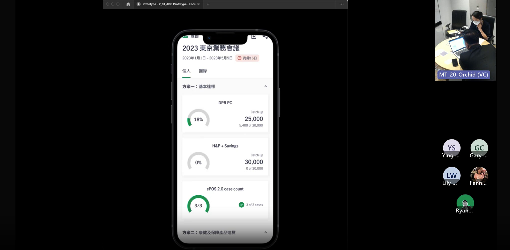
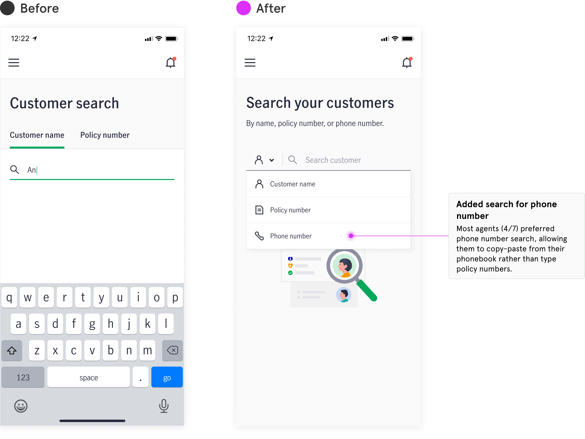
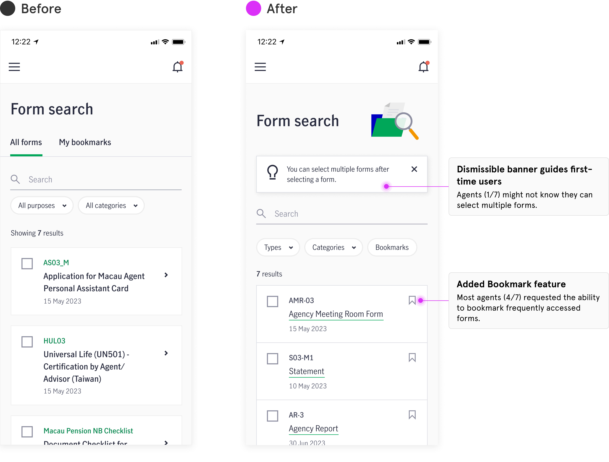

Agent Mobile Toolkit
Insurance | B2B
After research, the project team was eager to launch three highly requested features–Customer Search, Form Search, Contests to boost the app’s adoption.
App Store
My Role
I was a UX Designer working alongside a Visual Designer, Product Owner, Business Analysts, and engineering team.
Problem
When I joined the team, development was scheduled to start soon. The design team needed to deliver design to support the development sprint cycles. Although agents were already using these features on desktop, we weren't confident that we had enough user insights to design the mobile version.

A different hand-off approach
Switched the handoff approach, bought us time to get the answer we need to make design decision through user testing.
Discover: JTBD and Concept Test
We used a hypothesized Jobs-to-be-Done (JTBD) framework to guide our research questions and concept designs to validate agents' needs between desktop and mobile platforms. This approach helped us narrow down the scope and identify which features were must have versus nice-to-have.

Define & Develop: Inital Design + 2rd round of testing
Based on insights from the concept test, we created our initial design of the core flow. We then conducted usability testing to validate these key flows. These insights not only gave us more confidence in the design direction but also supported our trade-off discussions with the PO and engineers during the Deliver stage.
Deliver: Collaborating during sprints
During development sprints, we refined designs based on user insights and technical constraints, collaborating closely with the team to make informed adjustments to the MVP scope.
Customer Search

Contest & Incentive

Form Search
Takeaway
[Text here...]
More Projects